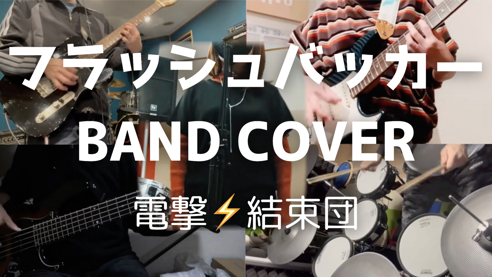

楽曲一覧 powered by AI
オリジナル楽曲
カバー動画 & 弾いてみた動画

フラッシュバッカー（Cover）
2025.05.14 RELEASE
バンド 電撃⚡️結束団 による結束バンドのフラッシュバッカーのカバー演奏です。
高校からエレキギターを始め、社会人になってからベース、ドラムと担当パートを増やしてきたマルチプレイヤーなアマチュアミュージシャン。
自作オリジナル曲や楽曲カバー、弾いてみた動画などを YouTube で発信中。
DTMには Cubase12 を使用。